Die Geschichte der Computer
Ein Computer - oder schlicht Rechner - ist ein Gerät, das mit Hilfe programmierbarer Anweisungen Daten verarbeitet. Seine Geschichte ist eine faszinierende Reise von mechanischen Zahnrädern bis hin zu Quantenbits.
Erste Schritte
Vom Abakus zum mechanischen Denker
Bevor es Silizium gab, rechnete der Mensch mit einfachsten Hilfsmitteln. Der Abakus gilt als das erste Werkzeug zur strukturierten Berechnung.
Mechanische Computer
Im 19. Jahrhundert erdachte Charles Babbage Maschinen, die menschliche Rechenarbeit automatisieren sollten – die Difference Engine und später die Analytical Engine. Seine Mitarbeiterin Ada Lovelace schrieb das erste Computerprogramm der Welt – Jahrzehnte, bevor der erste Computer tatsächlich gebaut wurde.
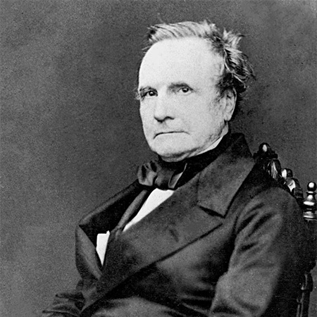
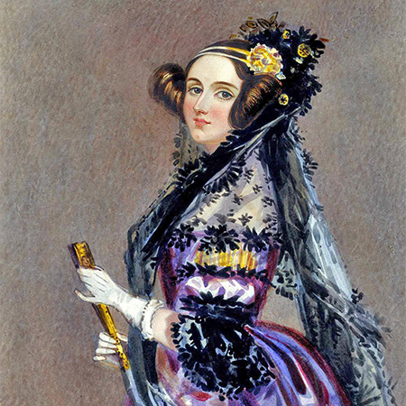
Vom Handrechner zur Miniatur
Mechanische Rechner wie das Comptometer oder die winzige, raffinierte Curta machten komplexe Berechnungen erstmals handlich
Der Begriff „Computer“ wurde ursprünglich für Menschen verwendet, die komplexe Berechnungen durchführten – oft Frauen, die in Teams arbeiteten, um astronomische Daten oder Ballistik-Tabellen zu erstellen.
Große Fortschitte
Programmierbaren Maschinen
Mit der Zuse Z1 von Konrad Zuse begann die Ära der modernen Rechentechnik. Sie war der erste frei programmierbare mechanische Rechner, der bereits mit binären Zahlen arbeitete.
Entschlüsselung der Enigma-Maschine
Während des Zweiten Weltkriegs entwickelte Alan Turing die Turing-Bombe, um die verschlüsselten Nachrichten der Enigma-Maschine zu entschlüsseln – ein Meilenstein für Informatik und Logik.
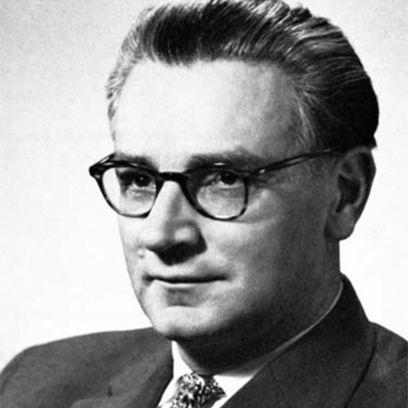
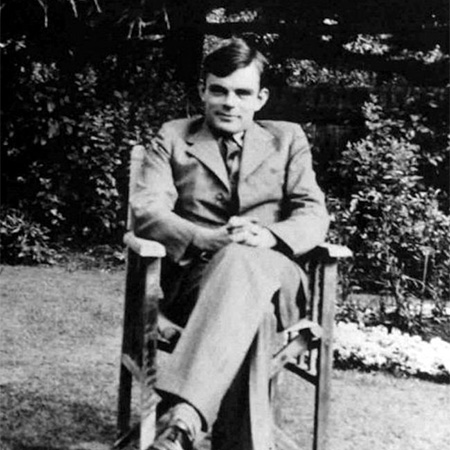
Relais und Elektroröhren
Die Zuse Z3 setzte mit elektromechanischen Relais neue Maßstäbe, gefolgt vom ENIAC, dem ersten voll elektronischen, digitalen Universalrechner.
Der Begriff Bug stammt aus dieser Zeit: In frühen Röhrenrechnern verursachten echte Insekten Kurzschlüsse!
Computer für alle
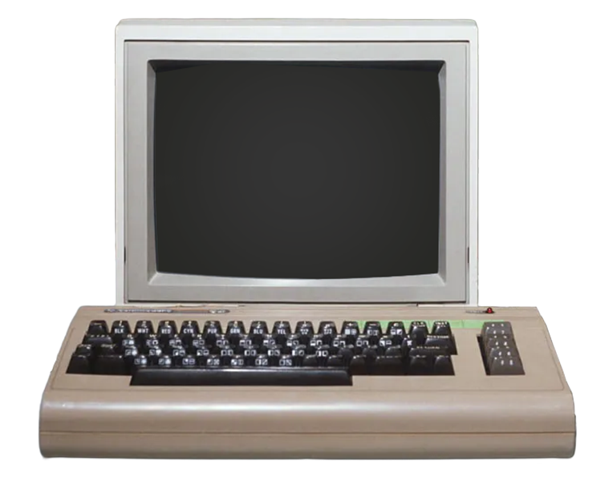
* PC-Revolution *
Mit den ersten 8-Bit-Heimcomputern wie dem Apple II, dem Commodore PET oder dem sagenhaften Commodore 64 begann das digitale Zeitalter in den Wohnzimmern.
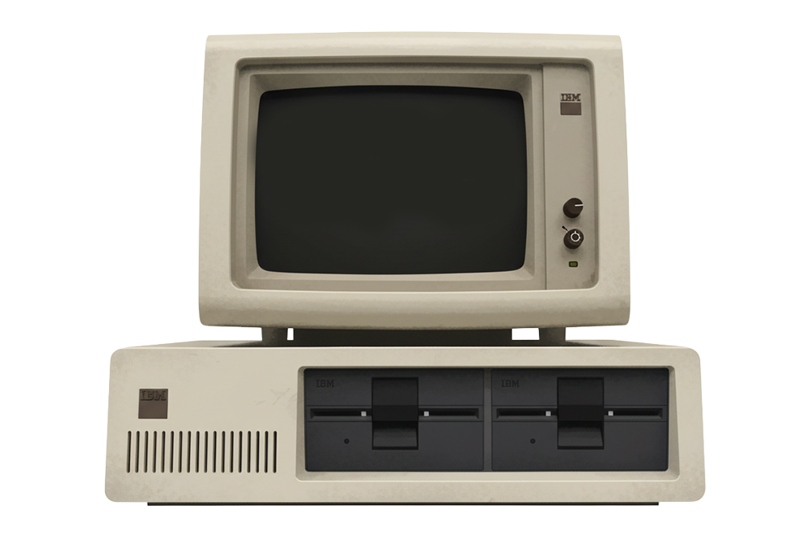
Der PC-Standard
Microsoft und IBM entwickelten den IBM-PC, der die Grundlage für heutige Windows-Systeme und die x86-Architektur legte.
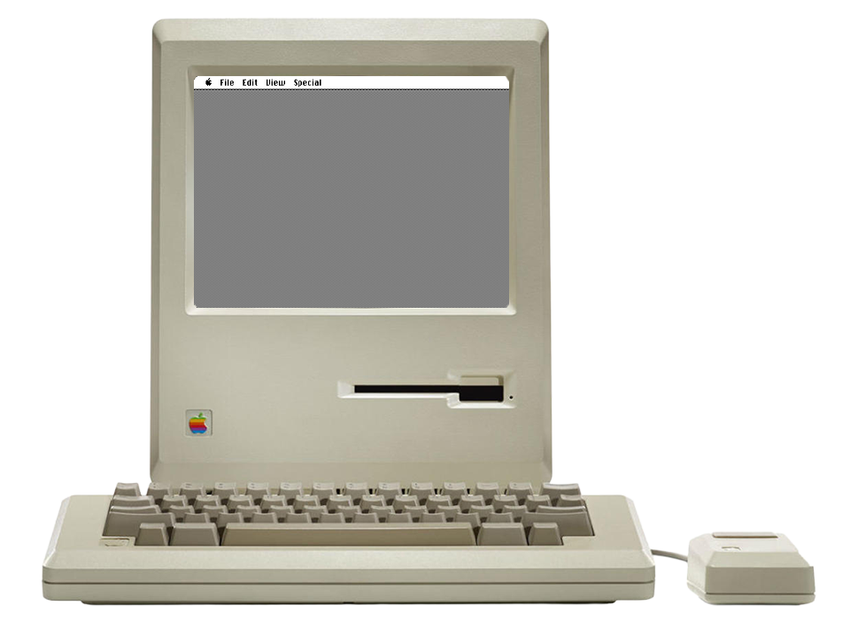
Apple setzt neue Maßstäbe
Der Apple Macintosh brachte 1984 erstmals eine grafische Benutzeroberfläche in den Massenmarkt.
Der Name „Macintosh“ stammt von der Apfelsorte McIntosh – leicht modernisiert, um rechtliche Probleme zu vermeiden.
Willkommen im Netzzeitalter
Das Internet-Zeitalter beginnt
In den 1990er-Jahren wurde das World Wide Web zur größten technischen Umwälzung seit der Erfindung des Computers. Zum ersten Mal verbanden sich Millionen Menschen über E-Mails, Newsgroups und die ersten Webseiten miteinander. Informationen ließen sich plötzlich in Sekunden über Kontinente hinweg teilen.
Von der Kommandozeile zur grafischen Oberfläche
Volume in drive C is MS-DOS
Directory of C:\
WINDOWS <DIR> 12-11-95
PROGRAM <DIR> 12-11-95
AUTOEXEC BAT 256 12-11-95
CONFIG SYS 128 12-11-95
C:\> win
_
Software erobert den Alltag
Mit der Einführung von Windows 95 und Microsoft Office wurde der PC zum Standardarbeitsplatz in Büros und Haushalten. Grafische Benutzeroberflächen ersetzten Kommandozeilen und Icons machten Computer intuitiv bedienbar.
|Mit der Einführung von Windows 95 und Microsoft Office wurde der PC zum Standardarbeitsplatz in Büros und Haushalten. Grafische Benutzeroberflächen ersetzten Kommandozeilen und Icons machten Computer intuitiv bedienbar.
Multimedia wird alltäglich
CD-ROMs, frühe Soundkarten und die ersten digitalen Kameras brachten Bilder, Ton und Video auf den Bildschirm. Programme wie der „Encarta“-Atlas oder Medienplayer öffneten völlig neue Formen der digitalen Bildung und Unterhaltung.
Spiele werden Welten
Action-Klassiker wie Doom, Quake und Tomb Raider oder strategischere Spiele wie SimCity 2000 prägten die Gaming-Kultur und legten den Grundstein für 3D-Grafikrevolutionen.
Das Digital-Magazin
Ein kleiner Einblick in die PC-Spiele-Szene aus den frühen 1990er Jahren.
↓ Scrollen um Durchzublättern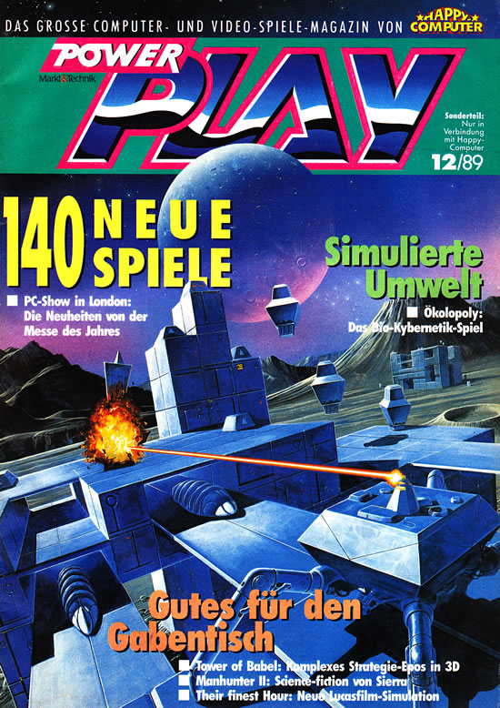
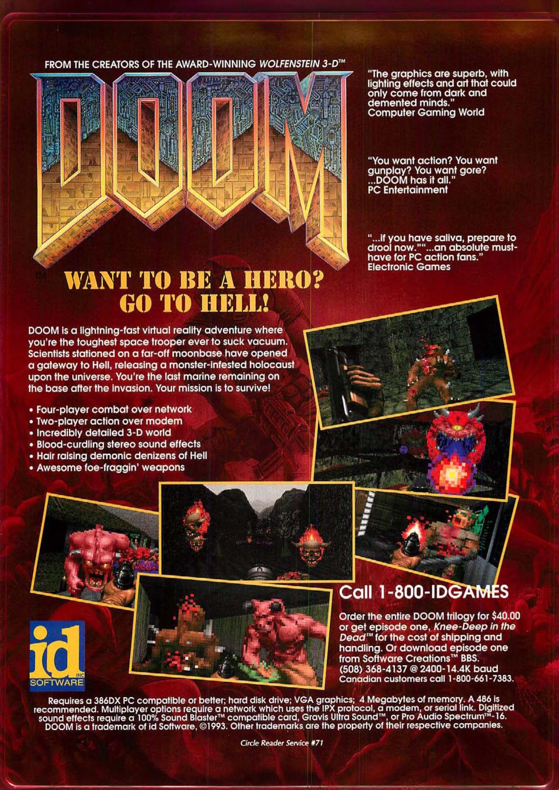
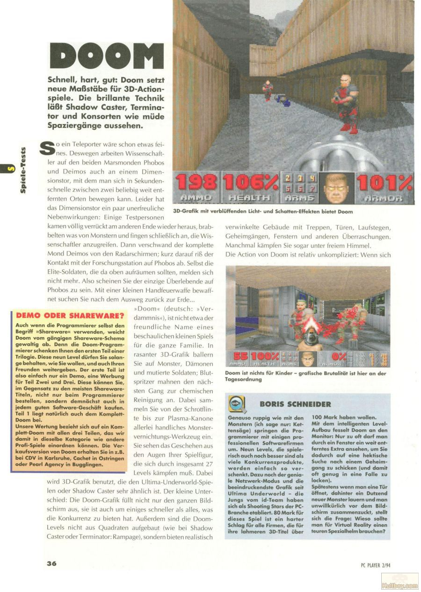
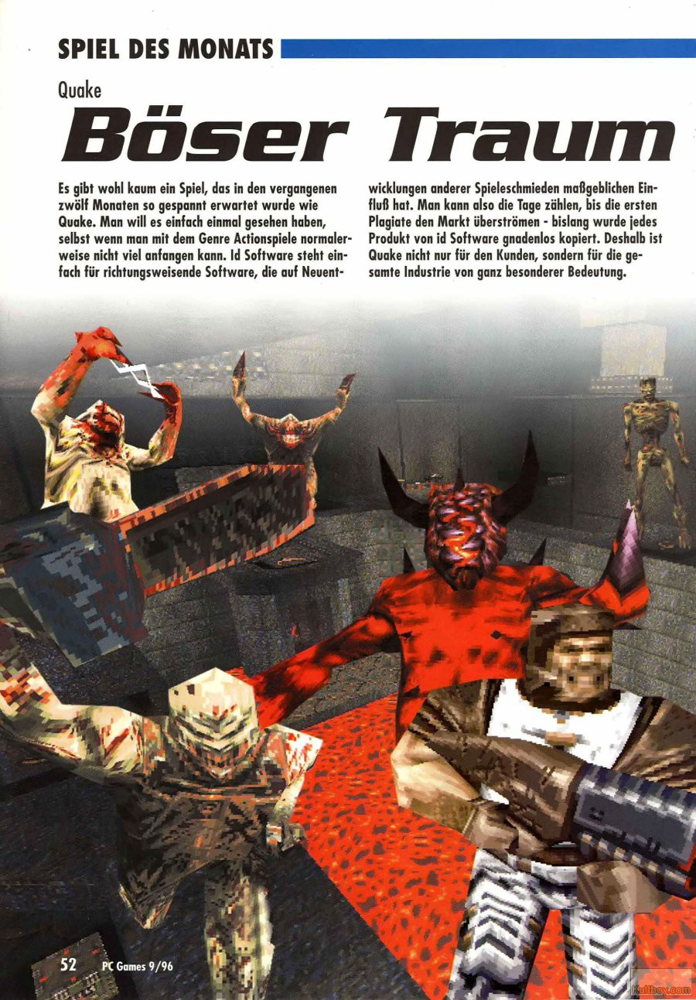
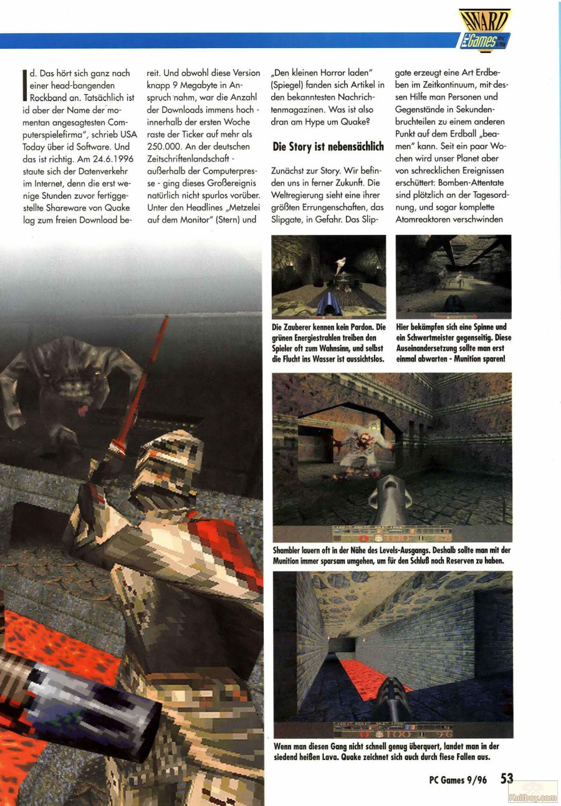
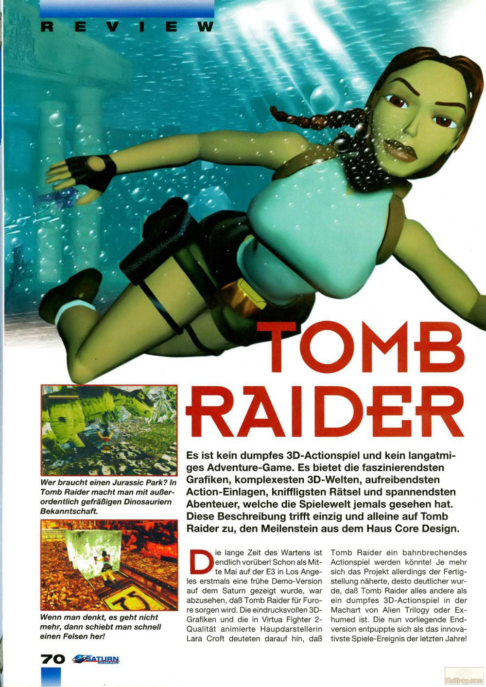
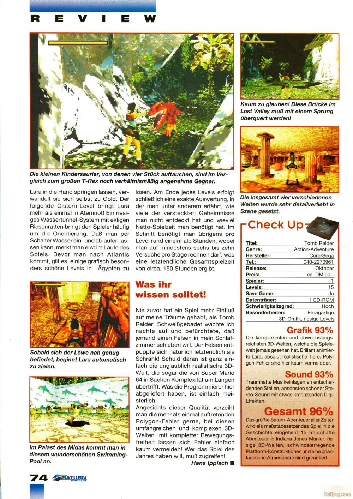
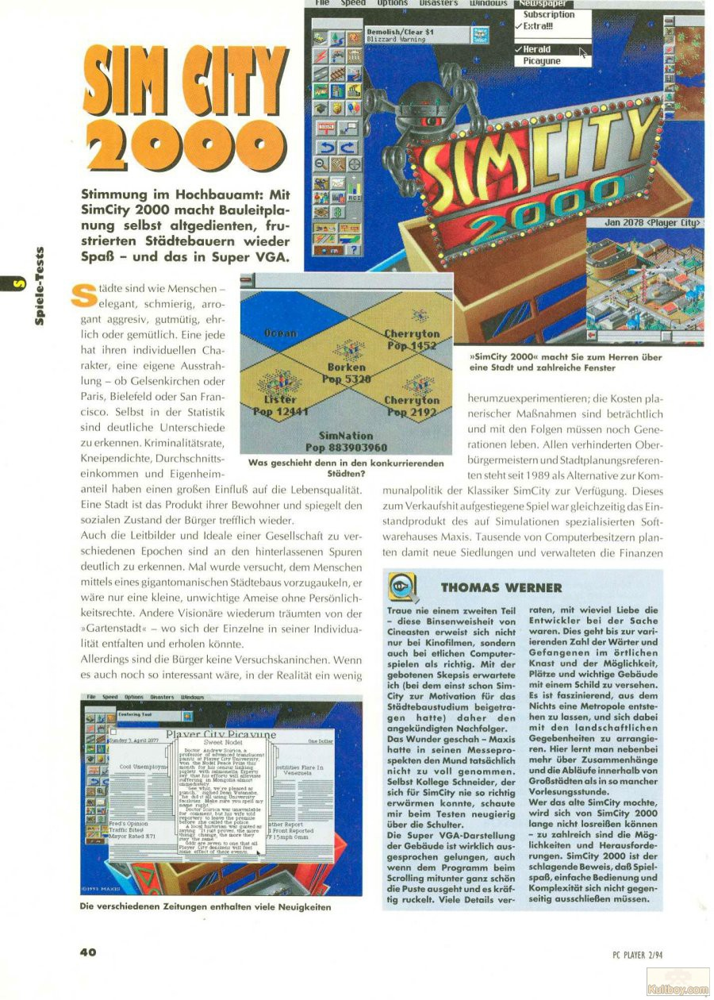
Heute und morgen
Mehr Leistung, mehr Vernetzung
Mit der Verbreitung von 64-Bit-Prozessoren standen erstmals über 4 GB Arbeitsspeicher zur Verfügung, was komplexe Anwendungen wie Video-Editing, Simulationen oder Spiele möglich machte.
Moderne Grenzen
Seit den 1980er-Jahren sind die Taktfrequenzen von wenigen MHz auf rund 5 GHz bei modernen Prozessoren gestiegen. Heute liegt der Fokus jedoch weniger auf reiner Geschwindigkeit – Mehrkern-Architekturen, Energieeffizienz und integrierte KI-Beschleuniger bestimmen die Leistungsfähigkeit moderner Chips.
Künstliche Intelligenz
Seit den 2010er Jahren erlebt die KI-Forschung einen rasanten Aufstieg. Systeme wie neuronale Netze ermöglichen Sprachassistenten, Bildgenerierung oder autonome Fahrzeuge.
Quantum Computing
In der Forschung entstehen Computer, die mit Qubits statt Bits arbeiten. Sie versprechen in Zukunft eine Rechenleistung, die klassische Computer bei bestimmten Aufgaben weit übertreffen könnte – etwa bei Kryptografie oder Materialsimulation.
Moderne Quantencomputer müssen auf Temperaturen nahe dem absoluten Nullpunkt (-273,15°C) gekühlt werden – das ist kälter als im Weltraum!